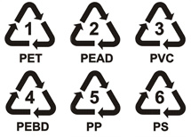

Los materiales plásticos¶
Son polímeros fabricados a partir del gas natural o del petróleo refinado.
Índice de contenidos:
Polímeros¶
Los polímeros son grandes moléculas compuestas por varias unidades llamadas monómeros que se repiten muchas veces a lo largo de cadenas como las cuentas de un collar.
Los monómeros son pequeñas moléculas que se unen a otros monómeros en largas cadenas formadas por la unión de hasta de miles de elementos. Estas cadenas pueden ser lineales, tener ramificaciones o en forma de red.
Generalmente son compuestos basados en uniones de carbono, llamados compuestos orgánicos.
Propiedades de los plásticos¶
- Propiedades mecánicas de los plásticos
En general los plásticos son blandos y con una resistencia mecánica media. La tenacidad depende del plástico. Hay plásticos muy resistentes a los golpes como el policarbonato y otros muy frágiles.
Algunos plásticos especiales de altas prestaciones soportan mejor que los demás las altas temperaturas y tienen buena resistencia mecánica. Es el caso del Kevlar que se utiliza en los chalecos antibalas.
- Densidad
Los plásticos son ligeros, con una densidad parecida a la del agua (1 kg/litro)
Algunos plásticos se fabrican con pompas de gas en su interior para conseguir que tengan muy baja densidad y sean buenos aislantes térmicos. Por ejemplo, la espuma de poliuretano o el poliestireno expandido (corcho blanco) tienen esta estructura.
- Respuesta a la luz
Algunos plásticos como el policarbonato o el metacrilato son muy transparentes y se utilizan para fabricar ventanas, DVDs, faros, etc.
Los plásticos desechados en el medio ambiente se degradan con la luz del sol rompiéndose en microplásticos contaminantes y produciendo sustancias tóxicas.
- Propiedades de fabricación de los plásticos
- Los plásticos son muy maleables, extremadamente dúctiles y fundibles. Todo esto facilita mucho la realización de soldaduras o la fabricación de láminas finas, hilos, o piezas moldeadas.
- Conductividad de los plásticos
- Los plásticos tienen poca conductividad térmica y eléctrica, razón por la que se utilizan como aislantes eléctricos y térmicos.
- Propiedades químicas de los plásticos
- Resisten muy bien la oxidación, a los ácidos y a los cáusticos. Por esa razón muchos contenedores de sustancias químicas están hechos de plástico.
- Propiedades ecológicas de los plásticos
La mayoría de plásticos no son biodegradables, son tóxicos en su fabricación y en el medio ambiente.
Los microplásticos representan actualmente un gran problema medioambiental porque se incorporan en la cadena trófica como alimento de los animales, que más tarde terminamos comiendo los humanos. Se calcula que actualmente ingerimos en microplásticos el equivalente en peso a una tarjeta de crédito cada año. Los microplásticos emiten sustancias parecidas a las hormonas que afectan negativamente la salud de todos los animales.
Los plásticos se pueden reciclar un pequeño número de veces porque al reciclarlos se degradan perdiendo sus propiedades originales y no sirven para fabricar el mismo producto.
Se calcula que solo el 14% del plástico se recolecta para su reciclaje.
Termoplásticos¶
Se pueden fundir o derretir a temperaturas no muy altas y vuelven a endurecerse cuando se enfrían.
- Tereftalato de polietileno (PET)
- Muy usado en envases de bebidas y textiles.
- Polietileno (PE)
Es uno de los plásticos más comunes por su bajo precio. Se usa en bolsas, film transparente, tuberías, envases, etc.
Hay dos grandes tipos de polietileno, el de alta densidad PEAD y el de baja densidad PEBD.
- Cloruro de polivinilo (PVC)
PVC rígido: se utiliza en envases, ventanas, tuberías.
PVC flexible: se utiliza en cables, juguetes, calzados, suelos, recubrimientos.
- Polipropileno (PP)
Es el plástico más utilizado después del Polietileno.
Se utiliza para envases de alimentos, láminas transparentes, tejidos, etc.
- Poliestireno (PS)
Este plástico se funde con temperaturas relativamente bajas (100ºC).
Se utiliza en envases de yogur, maquinillas de afeitar, poliestireno expandido ("corcho blanco" o poliexpan) para aislamientos y protección.
- Símbolos de reciclaje
Los termoplásticos suelen identificarse con un símbolo que indica su composición, para facilitar su reciclaje.

Termoplásticos de altas prestaciones¶
Son termoplásticos con mejores prestaciones mecánicas y de resistencia al calor que los termoplásticos habituales.
- Nailon
- Se usa para hacer hilos muy resistentes como los de las medias, los paracaídas, el interior de los neumáticos, etc. También para fabricar mecanismos como engranajes y cojinetes, cremalleras, etc.
- Teflón
Es prácticamente inerte por lo que no reacciona con otras sustancias. Tiene muy bajo rozamiento, es antiadherente y resiste temperaturas hasta 270ºC.
Se usa como recubrimiento de sartenes, cintas para evitar fugas de agua en las roscas de grifos, mecanismos que no necesitan lubricación, etc.
- Policarbonato
- Es muy transparente y muy resistente a los impactos por lo que se utiliza como sustituto del vidrio. Con él se fabrican CD, DVD, ventanas, cristales antibalas, escudos antidisturbios, viseras de casco de motorista, paneles de separación COVID, etc.
- Metacrilato
Es todavía más transparente que el policarbonato. De 10 a 20 veces más resistente al impacto que el vidrio, resiste a la intemperie y a la radiación ultravioleta.
Se utiliza para fabricar fibra óptica, señales, expositores, acuarios, obras de arte, etc.
Termoestables¶
No se funden una vez fabricados. Si la temperatura aumenta mucho se degradan sin fundirse, igual que la madera.
- Baquelita
Fue el primer plástico sintético, creado en 1907. Se puede fundir y moldear durante su fabricación, pero una vez solidificada no se podrá fundir de nuevo.
Aún hoy usa para fabricar mangos de sartén y asas para enseres de cocina, terminales eléctricos, etc.
- Melamina
- Su uso más conocido es para cubrir la madera aglomerada junto a papel de colores o imitación a madera. A los muebles que utilizan esta técnica se les llama también muebles de melamina.
- Resina epoxi
Se usa para hacer adhesivos de dos componentes muy resistentes con los que se fabrican aviones, automóviles, material deportivo, etc.
Otro uso muy frecuente es la elaboración de paneles de fibra de vidrio o fibra de carbono, usados para fabricar barcos, carenados de automóviles de carreras, contenedores de vidrio, placas de circuito impreso, etc.
- Poliuretano
- Su uso más conocido es la fabricación de espumas adhesivas que sirven como aislante térmico de paredes o para pegar marcos de puertas y ventanas con gran capacidad de relleno de huecos.
Elastómeros¶
Son polímeros con una gran elasticidad.
- Látex
Es de origen natural, una resina que se extrae del árbol siringa (Hevea brasiliensis).
Se usa en guantes, preservativos, colchones, ropa, pelotas, neumáticos, chicles, etc.
- Neopreno
Su uso más conocido es la fabricación de ropa y botas para el agua que son aislantes térmicos (trajes de buceo).
También sirve para hacer cinta adhesiva, fundas protectoras, sacos de dormir, etc.
- Siliconas
La mayoría de los polímeros son compuestos orgánicos porque están basados en largas cadenas de carbono. Por el contrario las siliconas se basan en largas cadenas de silicio, formando polímeros inorgánicos.
Se puede destacar su uso como adhesivo para vidrios de ventana y juntas, moldes de cocina para horno o para hielo, prótesis médicas, etc.
Cuestionarios¶
Cuestionarios de tipo test sobre los materiales plásticos.